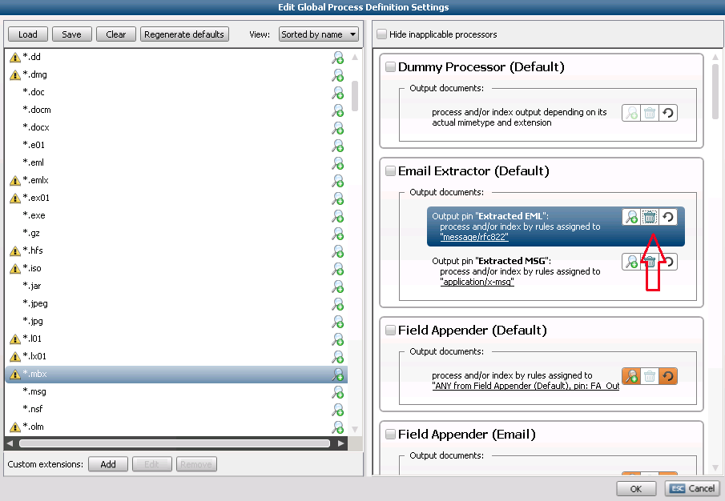

About
Main goal of local processing is to improve next things:
Local processing executes parts of processing workflow (defined by processing rules of the job) locally on the node - no intermediate actions/documents are passed to the central node.
Configuration
Local processing can be enabled using DeletingList.
Corresponding option in Legal Processing UI is "Switch on to remove files after processing" in Processing Definition Editor:

However it is not possible to create every valid DeletingList in LegalProcessing UI. Manual editing of the XML file is preferred at the moment:
Example
<DeletingList>
<DocumentProcessingStepPattern producedBy="PST Extractor (Default)" outputPin="Messages">
<DocumentPattern PatternType="MimeType" PatternText="application/x-msg" />
</DocumentProcessingStepPattern>
<DocumentProcessingStepPattern producedBy="Field Appender (Default)" outputPin="FA_Out">
<DocumentPattern PatternType="Any" />
</DocumentProcessingStepPattern>
<DocumentProcessingStepPattern producedBy="MSG Converter (Default)" outputPin="Processed MSG">
<DocumentPattern PatternType="MimeType" PatternText="application/x-msg" />
</DocumentProcessingStepPattern>
<DocumentProcessingStepPattern producedBy="MSG Converter (Default)" outputPin="Attachments">
<DocumentPattern PatternType="Any" />
</DocumentProcessingStepPattern>
<DocumentProcessingStepPattern producedBy="Embedded Object Extractor (Default)" outputPin="Extracted files">
<DocumentPattern PatternType="Any" />
</DocumentProcessingStepPattern>
<DocumentProcessingStepPattern producedBy="Archive Extractor (Default)" outputPin="Extracted files">
<DocumentPattern PatternType="Any" />
</DocumentProcessingStepPattern>
</DeletingList>
Priorities
Currently local actions have the highest priority. It means that as long as processing node has active local actions for particular processor it will execute them instead of global actions for this processor.
For example: if node executes local PST extractor at the moment, with very high probability it will not start any global MSG Converter actions until PST is done - extracted msg files produced by PST Extractor will be always processed with higher priority.
Processors availability
If processor is disabled for the node while job is running, all new actions for that processor on that node will be scheduled as global. However, local actions for disabled processor that are currently running will not be affected.
Notes
<DeletingList> <DocumentProcessingStepPattern> <DocumentPattern PatternType="Any" /> </DocumentProcessingStepPattern></DeletingList><appSettings> <!-- Intermediate Binaries Deletion --> <add key="BinaryDeletionIsEnabled" value="false" /> <add key="BinaryDeletionProcessBatchMinSize" value="100" /> <add key="BinaryDeletionOffsetTimeMs" value="120000" /> <!-- 2 min * 60 sec * 1000 ms --> <add key="BinaryDeletionProcessBatchMaxWaitingTimeMs" value="120000" /></appSettings><DeletingList> <DocumentProcessingStepPattern producedBy="PST Extractor (Default)" outputPin="Messages"> <DocumentPattern PatternType="MimeType" PatternText="application/x-msg" /> </DocumentProcessingStepPattern></DeletingList>|
|
|